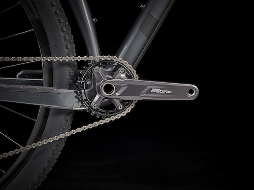
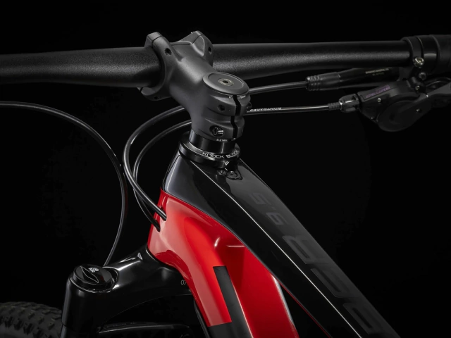
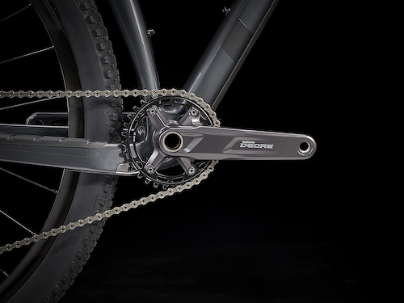
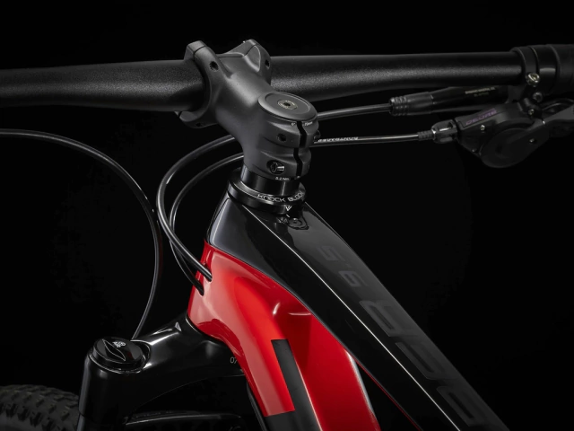

Cuadro
Horquilla
Carbono OCLV Mountain, IsoSpeed, tubo de dirección perfilado, Knock Block, guiado interno del control, frenos balanced post mount, Boost148
RockShox Judy SL, Solo Air, bloqueo TurnKey, tubo de horquilla perfilada, Boost110, Maxle Stealth de 15 mm, recorrido de 100 mm Recorrido máximo de la horquilla compatible 120mm (533 axle-to-crown)
Buje delantero
Bontrager de aleación, rodamiento sellado, eje de aleación, 6 tornillos, Boost110, eje pasante de 15 mm
Buje trasero
Bontrager de aleación, rodamiento sellado, 6 tornillos, nucleo Shimano MicroSpline, Boost148, eje pasante de 12 mm
Llanta
Bontrager Kovee, doble pared, Tubeless Ready, 28 agujeros, anchura 23 mm, válvula Presta
Cubiertas
Bontrager XR2 Team Issue, Tubeless Ready, flancos Inner Strength, aro de aramida, 120 tpi, 29 x 2,20''
Maneta de cambio
Shimano Deore M6100, 12 velocidades
Cambio
Shimano Deore M6100, caja larga
Pedalier
Talla: S, M: Shimano MT511, plato de aluminio 30D, línea de cadena de 52 mm, longitud de 170 mm
Talla: M, M/L, L, XL, XXL: Shimano MT511, plato de aluminio 30D, línea de cadena de 52 mm, longitud de 175 mm
Eje de Pedalier
Shimano MT500, 92 mm, PressFit
Cassette
Shimano Deore M6100, 10-51, 12 velocidades
Cadena
Shimano Deore M6100
Pedal
Plataforma de nylon VP-536
Tamaño maximo de plato
36T, Min 30T
Peso
 


